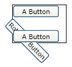

Общие сведения о классах Transform
В этом разделе описывается использование Двумерный Transform классы для поворота, масштабирования, сдвига и наклона FrameworkElement объектов.
Что такое преобразование?
Объект Transform определяет способ сопоставления или преобразования точек из одного пространства координат в другом пространстве координат. Это сопоставление описывается с помощью матрицы преобразования Matrix, который является коллекцией из трех строк и трех столбцов со Double значения.
Note
Windows Presentation Foundation (WPF) использует строки матрицы. Векторы представляют собой массивы на основе строк, а не на основе столбцов.
В следующей таблице показана структура матрицы WPF.
Матрица двумерного преобразования
| M11 По умолчанию: 1.0 |
M12 По умолчанию: 0,0 |
0,0 |
| M21 По умолчанию: 0,0 |
M22 По умолчанию: 1.0 |
0,0 |
| OffsetX По умолчанию: 0,0 |
OffsetY По умолчанию: 0,0 |
1.0 |
Изменяя значения элементов матрицы, можно поворачивать, масштабировать, наклонять и перемещать объект. Например, если вы измените значение в первом столбце третьей строки ( OffsetX значение) до 100, можно будет использовать его, чтобы переместить объект на 100 единиц по оси x. Если изменить значение во втором столбце второй строки на 3, можно использовать его для растяжения объекта в три раза больше по сравнению с текущим размером. Если изменить оба значения, объект будет перемещен на 100 единиц по оси X, а его ширина будет увеличена в 3 раза. Так как Windows Presentation Foundation (WPF) поддерживает только аффинные преобразования, в правом столбце всегда равны 0, 0, 1.
Несмотря на то, что Windows Presentation Foundation (WPF) позволяет напрямую управлять значениями элементов матрицы, она также предоставляет несколько Transform классы, которые позволяют преобразовывать объект, не зная структуры матрицы. Например ScaleTransform класс позволяет масштабировать объект, задав его ScaleX и ScaleY свойства, вместо изменения матрицы преобразования. Аналогичным образом RotateTransform класс позволяет повернуть объект, просто установив его Angle свойство.
Классы преобразования
Windows Presentation Foundation (WPF) предоставляет следующие Двумерный Transform классы для распространенных операций преобразования:
| Класс | Описание | Пример | Рисунки |
|---|---|---|---|
| RotateTransform | Поворачивает элемент на указанный Angle. | Вращение объекта | |
| ScaleTransform | Масштабирует элемент с указанным ScaleX и ScaleY суммы. | Масштабирование элемента | |
| SkewTransform | Наклоняет элемент в соответствии с указанным AngleX и AngleY суммы. | Наклон элемента | |
| TranslateTransform | Перемещает (преобразует) элемента заданным X и Y суммы. | Перемещение элемента |
Для создания более сложных преобразований, Windows Presentation Foundation (WPF) предоставляет следующие два класса:
| Класс | Описание | Пример |
|---|---|---|
| TransformGroup | Группирует несколько TransformGroup объекты в единую Transform , затем можно применить для преобразования свойств. | Применение нескольких преобразований к объекту |
| MatrixTransform | Создает пользовательские преобразования, которые не предоставляются с использованием других Transform классы. При использовании MatrixTransform, напрямую управлять матрицу. | Использование MatrixTransform для создания пользовательских преобразований |
Windows Presentation Foundation (WPF) также предоставляет Трехмерный преобразования. Дополнительные сведения см. в описании класса Transform3D.
Общие свойства преобразования
Один из способов преобразования объекта — объявить соответствующий Transform введите и применить его к свойству преобразования объекта. У различных типов объектов есть различные типы свойств преобразования. В следующей таблице перечислены несколько часто используемых типов Windows Presentation Foundation (WPF) и их свойства преобразования.
Преобразования и системы координат
При преобразовании объекта преобразуется не только объект, но и пространство координат, в котором он существует. По умолчанию преобразование центрируется в начало системы координат целевого объекта: (0,0). Единственное исключение — TranslateTransform; TranslateTransform нет свойств центра задать, так как результат преобразования не так же, независимо от того, где по центру.
В следующем примере используется RotateTransform для поворота Rectangle элемент, тип FrameworkElement, на 45 градусов относительно центральной точки по умолчанию (0, 0). На следующем рисунке показан результат поворота.
Элемент Rectangle, повернутый на 45 градусов относительно точки (0,0)
<Canvas Width="200" Height="200">
<Rectangle
Canvas.Left="100" Canvas.Top="100"
Width="50" Height="50"
Fill="RoyalBlue" Opacity="1.0">
<Rectangle.RenderTransform>
<RotateTransform Angle="45" />
</Rectangle.RenderTransform>
</Rectangle>
</Canvas>
По умолчанию элемент поворачивается относительно левого верхнего угла: (0, 0). RotateTransform, ScaleTransform, И SkewTransform классы предоставляют свойства CenterX и CenterY, которые позволяют указать точку, в которой применяется преобразование.
В следующем примере также используется RotateTransform для поворота Rectangle элемент на 45 градусов; тем не менее, это время CenterX и CenterY свойств, чтобы RotateTransform имеет центр (25, 25). На следующем рисунке показан результат поворота.

Элемент Rectangle, повернутый на 45 градусов относительно точки (25, 25)
<Canvas Width="200" Height="200">
<Rectangle
Canvas.Left="100" Canvas.Top="100"
Width="50" Height="50"
Fill="RoyalBlue" Opacity="1.0">
<Rectangle.RenderTransform>
<RotateTransform Angle="45" CenterX="25" CenterY="25" />
</Rectangle.RenderTransform>
</Rectangle>
</Canvas>
Преобразование элемента FrameworkElement
Применение преобразований к FrameworkElement, создание Transform и примените его к одному из двух свойств, FrameworkElement класс предоставляет:
LayoutTransform — Преобразование, которое применяется перед проходом разметки. После применения преобразования система разметки обрабатывает преобразованные размер и положение элемента.
RenderTransform — Преобразование, которое изменяет внешний вид элемента, но применяется после завершения прохода макета. С помощью RenderTransform вместо свойства LayoutTransform можно добиться повышения производительности.
Какое свойство следует использовать? Из-за преимуществ производительности, которые он предоставляет, используйте RenderTransform свойство всякий раз, когда возможно, особенно при использовании анимации Transform объектов. Используйте LayoutTransform свойство при масштабирования, поворота и наклона, а вам нужны родительского элемента, чтобы изменить размер элемента. Обратите внимание, что, если они используются с LayoutTransform свойства TranslateTransform объектов, по-видимому, не влияют на элементы. Это вызвано тем, что система разметки возвращает преобразуемый элемент в исходное положение в ходе обработки.
Дополнительные сведения о разметке в Windows Presentation Foundation (WPF) см. в разделе Общие сведения о разметке.
Пример Поворот элемента FrameworkElement на 45 градусов
В следующем примере используется RotateTransform для поворота кнопки по часовой стрелке на 45 градусов. Кнопка находится в StackPanel , имеет две другие кнопки.
По умолчанию RotateTransform поворачивается вокруг точки (0, 0). Так как в примере не задана центральная точка, то кнопка поворачивается вокруг точки (0, 0), т. е. левого верхнего угла. RotateTransform Применяется к RenderTransform свойство. На рисунке ниже показан результат преобразования.

Поворот на 45 градусов по часовой стрелке вокруг левого верхнего угла
<Border Margin="30"
HorizontalAlignment="Left" VerticalAlignment="Top"
BorderBrush="Black" BorderThickness="1" >
<StackPanel Orientation="Vertical">
<Button Content="A Button" Opacity="1" />
<Button Content="Rotated Button">
<Button.RenderTransform>
<RotateTransform Angle="45" />
</Button.RenderTransform>
</Button>
<Button Content="A Button" Opacity="1" />
</StackPanel>
</Border>
В следующем примере также используется RotateTransform для поворота кнопки на 45 градусов по часовой стрелке, но он также задает RenderTransformOrigin кнопки значение (0,5, 0,5). Значение RenderTransformOrigin свойство задается относительно размера кнопки. В результате кнопка поворачивается вокруг центра, а не вокруг левого верхнего угла. На рисунке ниже показан результат преобразования.

Поворот на 45 градусов по часовой стрелке вокруг центра
<Border Margin="30"
HorizontalAlignment="Left" VerticalAlignment="Top"
BorderBrush="Black" BorderThickness="1">
<StackPanel Orientation="Vertical">
<Button Content="A Button" Opacity="1" />
<Button Content="Rotated Button"
RenderTransformOrigin="0.5,0.5">
<Button.RenderTransform>
<RotateTransform Angle="45" />
</Button.RenderTransform>
</Button>
<Button Content="A Button" Opacity="1" />
</StackPanel>
</Border>
В следующем примере используется LayoutTransform вместо свойства RenderTransform свойство для поворота кнопки. При этом преобразование влияет на разметку кнопки, что приводит к запуску полного прохода системы разметки. Так как размер кнопки был изменен, то после поворота кнопки также изменяется ее положение. На рисунке ниже показан результат преобразования.
Поворот кнопки с использованием LayoutTransform
<Border Margin="30"
HorizontalAlignment="Left" VerticalAlignment="Top"
BorderBrush="Black" BorderThickness="1">
<StackPanel Orientation="Vertical">
<Button Content="A Button" Opacity="1" />
<Button Content="Rotated Button">
<Button.LayoutTransform>
<RotateTransform Angle="45" />
</Button.LayoutTransform>
</Button>
<Button Content="A Button" Opacity="1" />
</StackPanel>
</Border>
Анимация преобразований
Так как они наследуют от Animatable класса Transform классы могут быть анимированы. Для анимации Transform, примените анимацию совместимого типа к свойству для анимации.
В следующем примере используется Storyboard и DoubleAnimation с RotateTransform вносить Button вращаться при ее нажатии.
<Page
xmlns="http://schemas.microsoft.com/winfx/2006/xaml/presentation"
xmlns:x="http://schemas.microsoft.com/winfx/2006/xaml"
Title="Button Animated RotateTransform Example"
Background="White" Margin="50">
<StackPanel>
<Button Content="A Button"
RenderTransformOrigin="0.5,0.5">
<Button.RenderTransform>
<RotateTransform x:Name="AnimatedRotateTransform" Angle="0" />
</Button.RenderTransform>
<Button.Triggers>
<EventTrigger RoutedEvent="Button.Click">
<BeginStoryboard>
<Storyboard>
<DoubleAnimation
Storyboard.TargetName="AnimatedRotateTransform"
Storyboard.TargetProperty="Angle"
To="360" Duration="0:0:1" FillBehavior="Stop" />
</Storyboard>
</BeginStoryboard>
</EventTrigger>
</Button.Triggers>
</Button>
</StackPanel>
</Page>
Полный пример см. в разделе Примеры двумерных преобразований. Дополнительные сведения об анимации см. в разделе Общие сведения об эффектах анимации.
Возможности объектов Freezable
Так как он наследует от Freezable класс, Transform предоставляет ряд специальных возможностей: Transform объекты могут быть объявлены как ресурсы, общие для нескольких объектов, делать доступными только для чтения с целью повышения производительности, клонировать и делать потокобезопасными. Дополнительные сведения о различных функциях, предоставляемых Freezable объектов, см. в разделе Freezable Общие сведения об объектах.